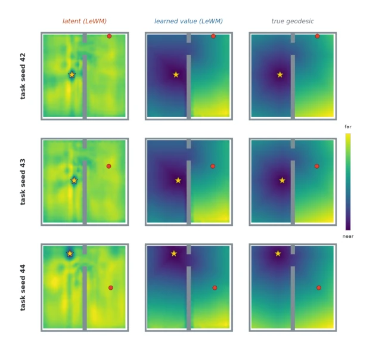
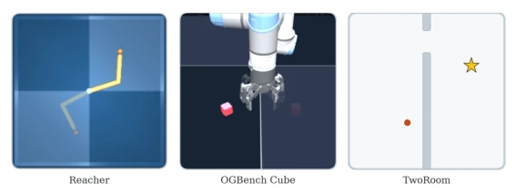
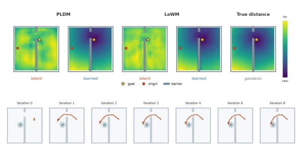
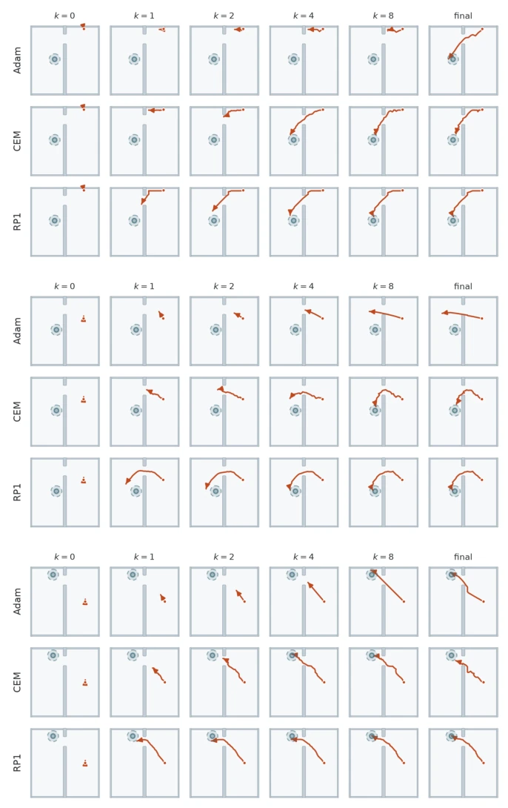

This paper pours cold water on the planning field of embodied AI: having world models (World Models) that can predict the future alone is useless; if it does not know how to "think" about improving plans, no matter how accurate the model is, it is in vain. The Reinforced Planning (RP1) proposed by the authors is indeed impressive; it learns the process of "how to plan" itself, rather than rigidly applying old algorithms like CEM or MPPI as before. Most ironically, it defeats the opponent's 9000 brute-force searches with just 9 world model rollouts; this efficiency improvement is simply like using an abacus to defeat a supercomputer. However, do not celebrate too early; this method has no resistance to world model hallucinations (Hallucination); once the model fabricates contact results, the planner goes crazy along with it, and it still relies on Dyna fine-tuning to "patch" it. Overall, this is a beautiful attempt to turn planning from "black-box rules" into "learnable strategies", but it still lacks a bit of "immunity to being tricked" to reach true general intelligence.
Humans solve complex problems relying on "mental simulation" and "planning", while existing machine learning systems have world models that can predict action consequences, but the step of "how to improve candidate plans" remains hardcoded. Current planners either rely on manually designed search rules (such as CEM [8], MPPI [13]), or only learn how to generate initial policies rather than iteratively optimize plans (such as IBP [36], Thinker [5]). More fatally, many JEPA-based world models (such as LeWorldModel [28], DINO-WM [54]) in latent spaces, geometric distance does not equate to time reachability (Theorem 1), leading to the failure of Euclidean distance-based evaluation. Furthermore, fixed-configuration optimizers cannot adapt to the heterogeneity of different tasks (Theorem 2), resulting in poor performance in complex contact tasks. Therefore, there is an urgent need for a method that can fully learn multi-step plan update rules and can be trained independently of the world model, to solve the problems of evaluation target bias and low search efficiency.

Figure 5: Latent-Distance vs. learned Cost-to-go. 3 randomly sampled tasks from seeds (42,43,44) and their corresponding cost landscapes.
RP1 adopts an Actor-Critic architecture, the core of which is transforming the planning process into a learnable iterative optimizer. The overall process is divided into three steps: First, train a goal-conditioned Quasimetric Critic (value function) using offline data, used to evaluate the "time cost" from latent states to goals, rather than simple geometric distance; Second, during the inference phase, the planner (Actor) receives the current plan, terminal value, and gradients, outputs the plan update amount $\Delta a_k$ through a residual neural network $f_\theta$, thereby generating a new plan $a_{k+1}$; Finally, train this planner through reinforcement learning signals (i.e., the terminal cost predicted by the world model), enabling it to learn when to trust gradients and when to deviate from gradients. In specific implementation, RP1 uses a residual update structure ($a_{k+1} = a_k + f_\theta(...)$) to stabilize gradient flow, and limits action ranges to prevent world model extrapolation. During training, the world model and Critic are frozen, and the planner performs end-to-end optimization by minimizing the predicted terminal cost, completely abandoning traditional optimizers (such as Adam or gradient descent) as update rules, truly achieving "learning how to plan".

Figure 2: Experiment environments. In Reacher (left) the agent moves a two-link arm to a goal configuration, here shaded. In OGBench Cube (middle) a robot arm picks up a cube and moves it to a goal position, also shaded. In TwoRoom (right) an agent navigates to a goal position, marked by a star.
The authors conducted experiments on three visual control benchmarks: TwoRoom (navigation), Reacher (manipulator), and OGBench Cube (grasping operations), comparing RP1 with baselines such as CEM, MPPI, Adam, DMPO, L2O-MPC, etc. Results show that RP1 only requires 9 world model rollouts to achieve near-perfect success rates, while the strongest baseline requires 3000-9000 times. In TwoRoom, it is proven that the learned Critic captures time reachability better than latent L2 distance; In Reacher, RP1 demonstrates stronger terminal accuracy under tighter tolerance; In OGBench Cube, RP1 significantly outperforms baselines in contact tasks, and inference speed is 67 times faster than CEM in concurrent scenarios. Ablation studies show that Dyna fine-tuning can effectively alleviate performance degradation caused by world model hallucinations.

Figure 3: RP1 in TwoRoom. (a) The learned critic better captures temporal cost-to-go than latent L2 distance. (b) RP1 iteratively refines its plan, with later updates focusing on fine corrections to the final actions. Additional visualizations are provided in Appendix C.2.

Figure 6: Plan refinement in TwoRoom. Each panel shows the planner’s best-scoring candidate plan at refinement iteration k on the same task, with all planners scoring plans using the learned value critic; “final” is k=30 for Adam and CEM and k=8 for RP1. Iterations differ greatly in cost: one CEM iteration evaluates 300 sampled plans (9,000 rollouts in total), one Adam iteration takes a gradient step on 100 plans in parallel (3,000 rollouts), whereas one RP1 iteration is a single forward pass of the learned refiner costing one rollout (9 in total, including the initial evaluation).